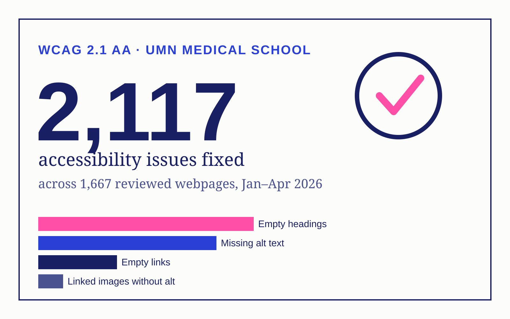

Web accessibility / UMN Medical School
Find the barrier.
Fix the page.
As a Student Web Coordinator, I audited and repaired Medical School webpages so that people using screen readers, keyboards and other assistive technology can use them, as part of the school's work toward the WCAG 2.1 Level AA standard.

01 / The challenge
Hundreds of sites.
One standard.
What problem did the work address?
The Medical School runs hundreds of department, lab and program sites in Drupal. Many pages were built over years by different editors, and automated scans flagged thousands of them for accessibility issues. My job was to work through the pages assigned to me.
Those issues are not cosmetic. An image without alt text is silent to a screen reader. An empty heading or link breaks the outline that blind users rely on to move through a page.
02 / What I fixed
Each error maps
to a WCAG rule.
Most common issues on my pages
From my PopeTech review round (122 pages):
| Issue | WCAG 2.1 | How I fixed it |
|---|---|---|
| Image has no alt text | 1.1.1 Non-text Content | Wrote alt text that says what the image communicates; marked purely decorative images so screen readers skip them. |
| Heading with no text | 1.3.1 Info and Relationships | Removed empty heading tags left by the editor, or turned them into real headings with text. |
| Link with no accessible text, linked image without alt | 2.4.4 Link Purpose, 4.1.2 Name, Role, Value | Gave every link a readable name, either visible text or alt text on the linked image. |
| Linked Word or PDF files | Applies WCAG to documents | Checked attached documents and flagged ones that needed accessible versions. |
03 / Process
Scan, inspect,
fix, re-test.
- ScanPopeTech and Editoria11y reports listed pages and error counts.
- InspectWAVE showed where each error sat in the page.
- FixEdited content, alt text, headings and layouts in Drupal.
- Re-testRan the checker again until the error count reached zero.
- LogRecorded status, dates and blockers in the shared tracker.
Not every page could be fixed by an editor. When a page was blocked by a firewall, unpublished, or needed a developer, I marked it in the tracker and wrote a note so the team could route it.
04 / Outcome & limits
Fewer barriers.
More to test.
What changed?
Between January and April 2026 I closed 1,667 pages in my tracker and fixed 2,117 flagged issues.
What I learned
Automated checkers find missing alt text, but they cannot tell whether alt text is useful. The judgment calls, like what an image is for, were the design part of the job.
Next steps
What I want to learn next
- Screen reader testingCheck pages with NVDA and VoiceOver, not only automated tools.
- Keyboard and focusTest that every control works without a mouse.
- Color contrast in designBuild contrast checks into my own design systems from the start.